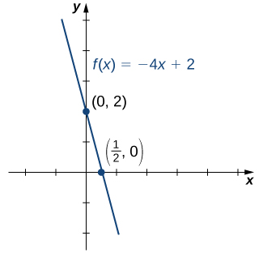
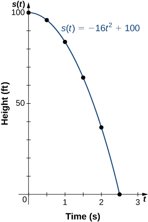

Section 1.1 Review of Functions
Learning Objectives.
Use functional notation to evaluate a function.
Determine the domain and range of a function.
Draw the graph of a function.
Find the zeros of a function.
Recognize a function from a table of values.
Make new functions from two or more given functions.
Describe the symmetry properties of a function.
In this section, we provide a formal definition of a function and examine several ways in which functions are represented—namely, through tables, formulas, and graphs. We study formal notation and terms related to functions. We also define composition of functions and symmetry properties. Most of this material will be a review for you, but it serves as a handy reference to remind you of some of the algebraic techniques useful for working with functions.
Subsection 1.1.1 Functions
Given two sets \(A\) and \(B\text{,}\) a set with elements that are ordered pairs \((x,y) \) where \(x\) is an element of \(A\) and \(y\) is an element of \(B\text{,}\) is a relation from \(A\) to \(B\text{.}\) A relation from \(A\) to \(B\) defines a relationship between those two sets. A function is a special type of relation in which each element of the first set is related to exactly one element of the second set. The element of the first set is called the input; the element of the second set is called the output. Functions are used all the time in mathematics to describe relationships between two sets. For any function, when we know the input, the output is determined, so we say that the output is a function of the input. For example, the area of a square is determined by its side length, so we say that the area (the output) is a function of its side length (the input). The velocity of a ball thrown in the air can be described as a function of the amount of time the ball is in the air. The cost of mailing a package is a function of the weight of the package. Since functions have so many uses, it is important to have precise definitions and terminology to study them.
Definition 1.2.
A function\(f\) consists of a set of inputs, a set of outputs, and a rule for assigning each input to exactly one output. The set of inputs is called the domain of the function. The set of outputs is called the range of the function.For example, consider the function \(f\text{,}\) where the domain is the set of all real numbers and the rule is to square the input. Then, the input \(x=3\) is assigned to the output \(3^2=9\text{.}\) Since every nonnegative real number has a real-value square root, every nonnegative number is an element of the range of this function. Since there is no real number with a square that is negative, the negative real numbers are not elements of the range. We conclude that the range is the set of nonnegative real numbers. For a general function \(f\) with domain \(D\text{,}\) we often use \(x\) to denote the input and \(y\) to denote the output associated with \(x\text{.}\) When doing so, we refer to \(x\) as the independent variable and \(y\) as the dependent variable, because it depends on \(x\text{.}\) Using function notation, we write \(y=f(x)\) and we read this equation as “\(y\) equals \(f\) of \(x\text{.}\)” For the squaring function described earlier, we write \(f(x)=x^2.\)
The concept of a function can be visualized using Figure 1.3, Figure 1.4 and Figures 1.5.
![An image with two items. The first item is a bubble labeled domain. Within the bubble are the numbers 1, 2, 3, and 4. An arrow with the label f; points from the first item to the second item, which is a bubble labeled range. Within this bubble are the numbers 2, 4, and 6. An arrow points from the 1 in the domain bubble to the 6 in the range bubble. An arrow points from the 1 in the domain bubble to the 6 in the range bubble. An arrow points from the 2 in the domain bubble to the 4 in the range bubble. An arrow points from the 3 in the domain bubble to the 2 in the range bubble. An arrow points from the 4 in the domain bubble to the 2 in the range bubble.](external/CNX_Calc_Figure_01_01_002.jpg)
![An image of a graph. The y axis runs from 0 to 3 and has the label dependent variable, y = f(x). The x axis runs from 0 to 5 and has the label independent variable, x. There are three points on the graph. The first point is at (1, 2) and has the label (1, f(1)) = (1, 2). The second point is at (2, 1) and has the label (2, f(2))=(2,1). The third point is at (3, 2) and has the label (3, f(3)) = (3,2). There is text along the y axis that reads range = \{1, 2} and text along the x axis that reads domain = \{1,2,3}](external/CNX_Calc_Figure_01_01_003.jpg)
Note 1.6.
Visit this applet link 1 to see more about graphs of functions.
We can also visualize a function by plotting points \((x,y)\) in the coordinate plane where \(y=f(x)\text{.}\) The graph of a function is the set of all these points. For example, consider the function \(f\) where the domain is the set \(D=\{1,2,3\}\) and the rule is \(f(x)=3-x.\) In Figure 1.7, we plot a graph of this function.
Every function has a domain. However, sometimes a function is described by an equation, as in \(f(x)=x^2,\) with no specific domain given. In this case, the domain is taken to be the set of all real numbers \(x\) for which \(f(x)\) is a real number. For example, since any real number can be squared, if no other domain is specified, we consider the domain of \(f(x)=x^2\) to be the set of all real numbers. On the other hand, the square root function \(f(x)=\sqrt{x}\) only gives a real output if \(x\) is nonnegative. Therefore, the domain of the function \(f(x)=\sqrt{x}\) is the set of nonnegative real numbers, sometimes called the natural domain.
For the functions \(f(x)=x^2\) and \(f(x)=\sqrt{x},\) the domains are sets with an infinite number of elements. Clearly we cannot list all these elements. When describing a set with an infinite number of elements, it is often helpful to use set-builder or interval notation. When using set-builder notation to describe a subset of all real numbers, denoted \(\mathbb{R}],\) we write
We read this as the set of real numbers \(x\) such that \(x\) has some property. For example, if we were interested in the set of real numbers that are greater than one but less than five, we could denote this set using set-builder notation by writing
A set such as this, which contains all numbers greater than \(a\) and less than \(b,\) can also be denoted using the interval notation \((a,b).\) Therefore,
\((1,5)=\{x| 1\leq x \leq 5\}.\)The numbers \(1\) and \(5\) are called the endpoints of this set. If we want to consider the set that includes the endpoints, we would denote this set by writing
We can use similar notation if we want to include one of the endpoints, but not the other. To denote the set of nonnegative real numbers, we would use the set-builder notation
The smallest number in this set is zero, but this set does not have a largest number. Using interval notation, we would use the symbol \(\infty ,\) which refers to positive infinity, and we would write the set as
It is important to note that \(\infty\) is not a real number. It is used symbolically here to indicate that this set includes all real numbers greater than or equal to zero. Similarly, if we wanted to describe the set of all nonpositive numbers, we could write
Here, the notation \(-\infty\) refers to negative infinity, and it indicates that we are including all numbers less than or equal to zero, no matter how small. The set
refers to the set of all real numbers.
Some functions are defined using different equations for different parts of their domain. These types of functions are known as piecewise-defined functions. For example, suppose we want to define a function \(f\) with a domain that is the set of all real numbers such that \(f(x)=3x+1\) for \(x \geq 2\) and \(f(x)=x^2\) for \(x < 2.\) We denote this function by writing
When evaluating this function for an input \(x,\) the equation to use depends on whether \(x \geq 2\) or \(x < 2.\) For example, since \(5 \ge 2,\) we use the fact that \(f(x)=3x+1\) for \(x \geq 2\) and see that \(f(5)=3(5)+1=16.\) On the other hand, for \(x=-1,\) we use the fact that \(f(x)=x^2\) for \(x < 2\) and see that \(f(-1)=1.\)
Example 1.8. Evaluating Functions.
For the function \(f(x)=3x^2+2x-1,\) evaluate
\(\displaystyle f(-2)\)
\(\displaystyle f(\sqrt{2})\)
\(\displaystyle f(a+h)\)
Substitute the given value for \(x \) in the formula for \(f(x).\)
\(\displaystyle f(-2)=3(-2)^2+2(-2)-1=12-4-1=7\)
\(\displaystyle f(\sqrt{2})=3(\sqrt{2})^2+2\sqrt{2}-1=6+2\sqrt{2}-1=5+2\sqrt{2}\)
- \begin{align*} f(a+h)=3(a+h)^2+2(a+h)-1 \amp =3(a^2+2ah+h^2)+2a+2h-1\\ \amp =3a^2+6ah+3h^2+2a+2h-1 \end{align*}
Checkpoint 1.9.
For \(f(x)=x^2-3x+5,\) evaluate \(f(1)\) and \(f(a+h).\)
Example 1.10. Finding Domain and Range.
For each of the following functions, determine the a. domain and b. range.
\(\displaystyle f(x)=(x-4)^2+5\)
\(\displaystyle f(x)=\sqrt{3x+2}-1\)
\(\displaystyle f(x)=\frac{3}{x-2}\)
-
Consider \(f(x)=(x-4)^2+5.\)
Since \(f(x)=(x-4)^2+5\) is a real number for any real number \(x,\) the domain of \(f\) is the interval \((-\infty, \infty).\)
Since \((x-4)^2 \geq 0,\) we know \(f(x)=(x-4)^2+5 \geq 5.\) Therefore, the range must be a subset of \(\{y|y \geq 5\}.\) To show that every element in this set is in the range, we need to show that for a given \(y\) in that set, there is a real number \(x\) such that \(f(x)=(x-4)^2+5=y.\) Solving this equation for \(x,\) we see that we need \(x\) such that
\begin{equation*} (x-4)^2=y-5. \end{equation*}This equation is satisfied as long as there exists a real number \(x\) such that\begin{equation*} x-4= \pm \sqrt{y-5}. \end{equation*}Since \(y \geq 5,\) the square root is well-defined. We conclude that for \(x=4 \pm \sqrt{y-5},f(x)=y,\) and therefore the range is \(\{y|y \geq 5\}.\)
-
Consider \(f(x)=\sqrt{3x+2}-1.\)
To find the domain of \(f,\) we need the expression \(3x+2 \geq 0.\) Solving this inequality, we conclude that the domain is \(\{x|x\geq-2/3\}.\)
-
To find the range of \(f,\) we note that since \(\sqrt{3x+2}\geq 0,f(x)=\sqrt{3x+2}-1\geq -1.\) Therefore, the range of \(f\) must be a subset of the set \(\{y|y\geq-1\}.\) To show that every element in this set is in the range of \(f,\) we need to show that for all \(y\) in this set, there exists a real number \(x\) in the domain such that \(f(x)=y.\) Let \(y\geq-1.\) Then, \(f(x)=y\) if and only if
\begin{equation*} \sqrt{3x+2}-1=y. \end{equation*}Solving this equation for \(x,\) we see that \(x\) must solve the equation
\begin{equation*} \sqrt{3x+2}=y+1. \end{equation*}Since \(y\geq-1,\) such an \(x\) could exist. Squaring both sides of this equation, we have
\begin{equation*} 3x+2=(y+1)^2. \end{equation*}Therefore, we need
\begin{equation*} 3x=(y+1)^2-2, \end{equation*}which implies
\begin{equation*} x=\frac{1}{3}(y+1)^2-\frac{2}{3}. \end{equation*}We just need to verify that \(x\) is in the domain of \(f.\) Since the domain of \(f\) consists of all real numbers greater than or equal to \(-2/3,\) and
\begin{equation*} \frac{1}{3}(y+1)^2-\frac{2}{3}\geq -\frac{2}{3}, \end{equation*}there does exist an \(x\) in the domain of \(f.\) We conclude that the range of \(f\) is \(\{y|y\geq-1\}.\)
-
Consider \(f(x)=3/(x-2).\)
Since \(3/(x-2)\) is defined when the denominator is nonzero, the domain is \(\{x|x \neq 2\}.\)
To find the range of \(f,\) we need to find the values of \(y\) such that there exists a real number \(x\) in the domain with the property that
\begin{equation*} \frac{3}{x-2}=y. \end{equation*}Solving this equation for \(x,\) we find that\begin{equation*} x=\frac{3}{y}+2. \end{equation*}Therefore, as long as \(y\neq 0,\) there exists a real number \(x\) in the domain such that \(f(x)=y.\) Thus, the range is \(\{y|y \neq 0\}.\)
Checkpoint 1.11.
Find the domain and range for \(f(x)=\sqrt{4-2x}+5.\)
Subsection 1.1.2 Representing Functions
Typically, a function is represented using one or more of the following tools:
A table
A graph
A formula
We can identify a function in each form, but we can also use them together. For instance, we can plot on a graph the values from a table or create a table from a formula.
Subsubsection 1.1.2.1 Tables
Functions described using a table of values arise frequently in real-world applications. Consider the following simple example. We can describe temperature on a given day as a function of time of day. Suppose we record the temperature every hour for a 24-hour period starting at midnight. We let our input variable \(x\) be the time after midnight, measured in hours, and the output variable \(y\) be the temperature \(x\) hours after midnight, measured in degrees Fahrenheit. We record our data in Table 1.12.
| Hours after Midnight | Temperature (\(^\circ\)F) | Hours after Midnight | Temperature (\(^\circ\)F) |
|---|---|---|---|
| 0 | 58 | 12 | 84 |
| 1 | 54 | 13 | 85 |
| 2 | 53 | 14 | 85 |
| 3 | 52 | 15 | 83 |
| 4 | 52 | 16 | 82 |
| 5 | 55 | 17 | 80 |
| 6 | 60 | 18 | 77 |
| 7 | 64 | 19 | 74 |
| 8 | 72 | 20 | 69 |
| 9 | 75 | 21 | 65 |
| 10 | 78 | 22 | 60 |
| 11 | 80 | 23 | 58 |
We can see from the table that temperature is a function of time, and the temperature decreases, then increases, and then decreases again. However, we cannot get a clear picture of the behavior of the function without graphing it.
Subsubsection 1.1.2.2 Graphs
Given a function \(f\) described by a table, we can provide a visual picture of the function in the form of a graph. Graphing the temperatures listed in Table 1.12 can give us a better idea of their fluctuation throughout the day. Figure 1.13 shows the plot of the temperature function.
!["An image of a graph. The y axis runs from 0 to 90 and has the label “Temperature in Fahrenheit”. The x axis runs from 0 to 24 and has the label “hours after midnight”. There are 24 points on the graph, one at each increment of 1 on the x-axis. The first point is at (0, 58) and the function decreases until x = 4, where the point is (4, 52) and is the minimum value of the function. After x=4, the function increases until x = 13, where the point is (13, 85) and is the maximum of the function along with the point (14, 85). After x = 14, the function decreases until the last point on the graph, which is (23, 58)."](external/CNX_Calc_Figure_01_01_005.jpg)
From the points plotted on the graph in Figure 1.13, we can visualize the general shape of the graph. It is often useful to connect the dots in the graph, which represent the data from the table. In this example, although we cannot make any definitive conclusion regarding what the temperature was at any time for which the temperature was not recorded, given the number of data points collected and the pattern in these points, it is reasonable to suspect that the temperatures at other times followed a similar pattern, as we can see in Figure 1.14.
!["An image of a graph. The y axis runs from 0 to 90 and has the label “Temperature in Fahrenheit”. The x axis runs from 0 to 24 and has the label “hours after midnight”. There are 24 points on the graph, one at each increment of 1 on the x-axis. The first point is at (0, 58) and the function decreases until x = 4, where the point is (4, 52) and is the minimum value of the function. After x=4, the function increases until x = 13, where the point is (13, 85) and is the maximum of the function along with the point (14, 85). After x = 14, the function decreases until the last point on the graph, which is (23, 58). A line connects all the points on the graph."](external/CNX_Calc_Figure_01_01_014.jpg)
Subsubsection 1.1.2.3 Algebraic Formulas
Sometimes we are not given the values of a function in table form, rather we are given the values in an explicit formula. Formulas arise in many applications. For example, the area of a circle of radius \(r\) is given by the formula \(A(r)=\pi r^2.\) When an object is thrown upward from the ground with an initial velocity \(v_0\) ft/s, its height above the ground from the time it is thrown until it hits the ground is given by the formula \(s(t)=-16t^2+v_0 t.\) When \(P\) dollars are invested in an account at an annual interest rate \(r\) compounded continuously, the amount of money after \(t\) years is given by the formula \(A(t)=Pe^{rt}.\) Algebraic formulas are important tools to calculate function values. Often we also represent these functions visually in graph form.
Given an algebraic formula for a function \(f,\) the graph of \(f\) is the set of points \((x,f(x)),\) where \(x\) is in the domain of \(f\) and \(f(x)\) is in the range. To graph a function given by a formula, it is helpful to begin by using the formula to create a table of inputs and outputs. If the domain of \(f\) consists of an infinite number of values, we cannot list all of them, but because listing some of the inputs and outputs can be very useful, it is often a good way to begin.
When creating a table of inputs and outputs, we typically check to determine whether zero is an output. Those values of \(x\) where \(f(x)=0\) are called the zeros of a function. For example, the zeros of \(f(x)=x^2-4\) are \(x=±2.\) The zeros determine where the graph of \(f\) intersects the \(x\)-axis, which gives us more information about the shape of the graph of the function. The graph of a function may never intersect the x-axis, or it may intersect multiple (or even infinitely many) times.
Another point of interest is the \(y\)-intercept, if it exists. The \(y\)-intercept is given by \((0,f(0)).\)
Since a function has exactly one output for each input, the graph of a function can have, at most, one \(y\)-intercept. If \(x=0\) is in the domain of a function \(f,\) then \(f\) has exactly one \(y\)-intercept. If \(x=0\) is not in the domain of \(f,\) then \(f\) has no \(y\)-intercept. Similarly, for any real number \(c,\) if \(c\) is in the domain of \(f,\) there is exactly one output \(f(c),\) and the line \(x=c\) intersects the graph of \(f\) exactly once. On the other hand, if \(c\) is not in the domain of \(f,f(c)\) is not defined and the line \(x=c\) does not intersect the graph of \(f.\) This property is summarized in the vertical line test.
Note 1.15. Rule: Vertical Line Test.
Given a function \(f,\) every vertical line that may be drawn intersects the graph of \(f\) no more than once. If any vertical line intersects a set of points more than once, the set of points does not represent a function.
We can use this test to determine whether a set of plotted points represents the graph of a function (Figure 1.16 ).
Example 1.17. Finding Zeros and \(y\)-Intercepts of a Function.
Consider the function \(f(x)=-4x+2.\)
Find all zeros of \(f.\)
Find the \(y\)-intercept (if any).
Sketch a graph of \(f.\)
To find the zeros, solve \(f(x)=-4x+2=0.\) We discover that \(f\) has one zero at \(x=1/2.\)
The \(y\)-intercept is given by \((0,f(0))=(0,2).\)
- Given that \(f\) is a linear function of the form \(f(x)=mx+b\) that passes through the points \((1/2,0)\) and \((0,2),\) we can sketch the graph of \(f\) (Figure 1.18). 
Figure 1.18. The function \(f(x)=-4x+2\) is a line with \(x\)-intercept \((1/2,0)\) and \(y\)-intercept \((0,2).\)
Example 1.19. Using Zeros and \(y\)-Intercepts to Sketch a Graph.
Consider the function \(f(x)=\sqrt{x+3}+1.\)
Find all zeros of \(f.\)
Find the \(y\)-intercept (if any).
Sketch a graph of \(f.\)
To find the zeros, solve \(\sqrt{x+3}+1=0.\) This equation implies \(\sqrt{x+3}=-1.\) Since \(\sqrt{x+3}\geq 0\) for all \(x,\) this equation has no solutions, and therefore \(f\) has no zeros.
The \(y\)-intercept is given by \((0,f(0))=(0,\sqrt{3}+1).\)
- To graph this function, we make a table of values. Since we need \(x+3 \geq 0,\) we need to choose values of \(x\geq -3.\) We choose values that make the square-root function easy to evaluate.
Table 1.20. \(x\) \(-3\) \(-2\) \(1\) \(f(x)\) \(1\) \(2\) \(3\)
Making use of the table and knowing that, since the function is a square root, the graph of \(f\) should be similar to the graph of \(y=\sqrt{x},\) we sketch the graph (Figure 1.21).
Checkpoint 1.22.
Find the zeros of \(f(x)=x^3-5x^2+6x.\)
Example 1.23. Finding the Height of a Free-Falling Object.
If a ball is dropped from a height of \(100\) ft, its height \(s\) at time \(t\) is given by the function \(s(t)=-16t^2+100,\) where \(s\) is measured in feet and \(t\) is measured in seconds. The domain is restricted to the interval \([0,c],\) where \(t=0\) is the time when the ball is dropped and \(t=c\) is the time when the ball hits the ground.
Create a table showing the height \(s(t)\) when \(t=0,0.5,1,1.5,2, \) and \(2.5.\) Using the data from the table, determine the domain for this function. That is, find the time \(c\) when the ball hits the ground.
Sketch a graph of \(s.\)
-
Table 1.24. Height \(s\) as a Function of Time \(t\) \(t\) \(0\) \(0.5\) \(1\) \(1.5\) \(2\) \(2.5\) \(s(t)\) \(100\) \(96\) \(84\) \(64\) \(36\) \(0\) Since the ball hits the ground when \(t=2.5,\) the domain of this function is the interval \([0,2.5].\)
- 
Figure 1.25.
Note that for this function and the function \(f(x)=-4x+2\) graphed in Figure 1.18, the values of \(f(x)\) are getting smaller as \(x\) is getting larger. A function with this property is said to be decreasing. On the other hand, for the function \(f(x)=\sqrt{x+3}+1\) graphed in Figure 1.21, the values of \(f(x)\) are getting larger as the values of \(x\) are getting larger. A function with this property is said to be increasing. It is important to note, however, that a function can be increasing on some interval or intervals and decreasing over a different interval or intervals. For example, using our temperature function in Figure 1.13, we can see that the function is decreasing on the interval \((0,4),\) increasing on the interval \((4,14),\) and then decreasing on the interval \((14,23).\) We make the idea of a function increasing or decreasing over a particular interval more precise in the next definition.
Definition 1.26.
We say that a function \(f\) is increasing on the interval \(I\) if for all \(x_1,x_2\in I,\)
We say \(f\) is strictly increasing on the interval \(I\) if for all \(x_1,x_2\in I,\)
We say that a function \(f\) is decreasing on the interval \(I\) if for all \(x_1,x_2\in I,\)
We say that a function \(f\) is strictly decreasing on the interval \(I\) if for all \(x_1,x_2\in I,\)
For example, the function \(f(x)=3x\) is increasing on the interval \((-\infty, \infty)\) because \(3x_1 < 3x_2\) whenever \(x_1 < x_2.\) On the other hand, the function \(f(x)=-x^3\) is decreasing on the interval \((-\infty, \infty)\) because \(-(x_1)^3 > -(x_2)^3\) whenever \(x_1 < x_2\) (Figure 1.27).

Definition 1.28.
We say that a function \(f\) is concave up on the interval \(I\) if the graph bends upwards on \(I\text{.}\)
We say that a function \(f\) is concave down on the interval \(I\) if the graph bends downwards on \(I\text{.}\)
For example, the function \(f(x)=x^2+1\) is concave up on the entire real line, that is, on the interval \((-\infty,\infty)\) since the graph of \(f\) bends upwards. Notice that a function may not be concave up/concave down everywhere. It may change concavity. This is illustrated in the following example.
Observe that \(g(x)=x^3\) is concave down on the interval \((-\infty,0)\) since the graph of \(g\) bends upwards on this interval. Moreover, \(g\) is concave up on the interval \((0,\infty)\) since the graph of \(g\) bends downwards on this interval.
Subsection 1.1.3 Combining Functions
Now that we have reviewed the basic characteristics of functions, we can see what happens to these properties when we combine functions in different ways, using basic mathematical operations to create new functions. For example, if the cost for a company to manufacture \(x\) items is described by the function \(C(x)\) and the revenue created by the sale of \(x\) items is described by the function \(R(x),\) then the profit on the manufacture and sale of \(x\) items is defined as \(P(x)=R(x)-C(x).\) Using the difference between two functions, we created a new function.
Alternatively, we can create a new function by composing two functions. For example, given the functions \(f(x)=x^2\) and \(g(x)=3x+1,\) the composite function \(f\circ g\) is defined such that
The composite function \(g\circ f\) is defined such that
Note that these two new functions are different from each other.
Subsubsection 1.1.3.1 Combining Functions with Mathematical Operators
To combine functions using mathematical operators, we simply write the functions with the operator and simplify. Given two functions \(f\) and \(g,\) we can define four new functions:
Example 1.29. Combining Functions Using Mathematical Operations.
Given the functions \(f(x)=2x-3\) and \(g(x)=x^2-1,\) find each of the following functions and state its domain.
\(\displaystyle (f+g)(x)\)
\(\displaystyle (f-g)(x)\)
\(\displaystyle (f·g)(x)\)
\(\displaystyle \left(\frac{f}{g}\right)(x)\)
\((f+g)(x)=(2x-3)+(x^2-1)=x^2+2x-4.\) The domain of this function is the interval \((-\infty,\infty).\)
\((f-g)(x)=(2x-3)-(x^2-1)=-x^2+2x-2.\) The domain of this function is the interval \((-\infty,\infty).\)
\((f·g)(x)=(2x-3)(x^2-1)=2x^3-3x^2-2x+3.\) The domain of this function is the interval \((-\infty,\infty).\)
\(\left(\frac{f}{g}\right)(x)=\frac{2x-3}{x^2-1}.\) The domain of this function is \(\{x|x\neq\pm 1\}.\)
Checkpoint 1.30.
For \(f(x)=x^2+3\) and \(g(x)=2x-5,\) find \((f/g)(x)\) and state its domain.
Subsubsection 1.1.3.2 Function Composition
When we compose functions, we take a function of a function. For example, suppose the temperature \(T\) on a given day is described as a function of time \(t\) (measured in hours after midnight) as in Table 1.12. Suppose the cost \(C,\) to heat or cool a building for 1 hour, can be described as a function of the temperature \(T.\) Combining these two functions, we can describe the cost of heating or cooling a building as a function of time by evaluating \(C(T(t)).\) We have defined a new function, denoted \(C\circ T,\) which is defined such that \((C\circ T)(t)=C(T(t))\) for all \(t\) in the domain of \(T.\) This new function is called a composite function. We note that since cost is a function of temperature and temperature is a function of time, it makes sense to define this new function \((C\circ T)(t).\) It does not make sense to consider \((T\circ C)(t),\) because temperature is not a function of cost.
Definition 1.31.
Consider the function \(f\) with domain \(A\) and range \(B,\) and the function \(g\) with domain \(D\) and range \(E.\) If \(B\) is a subset of \(D,\) then the composite function \((g\circ f)(x)\) is the function with domain \(A\) such that
A composite function \(g\circ f\) can be viewed in two steps. First, the function \(f\) maps each input \(x\) in the domain of \(f\) to its output \(f(x)\) in the range of \(f.\) Second, since the range of \(f\) is a subset of the domain of \(g,\) the output \(f(x)\) is an element in the domain of \(g,\) and therefore it is mapped to an output \(g(f(x))\) in the range of \(g.\) In Figure 1.32, we see a visual image of a composite function.
!["An image with three items. The first item is a blue bubble that has two labels: “domain of f” and “domain of g of f”. This item contains the numbers 1, 2, and 3. The second item is two bubbles: an orange bubble labeled “domain of g” and a blue bubble that is completely contained within the orange bubble and is labeled “range of f”. The blue bubble contains the numbers 0 and 1, which are thus also contained within the larger orange bubble. The orange bubble contains two numbers not contained within the smaller blue bubble, which are 2 and 3. The third item is two bubbles: an orange bubble labeled “range of g” and a blue bubble that is completely contained within the orange bubble and is labeled “range of g of f”. The blue bubble contains the numbers 4 and 5, which are thus also contained within the larger orange bubble. The orange bubble contains one number not contained within the smaller blue bubble, which is the number 3. The first item points has a blue arrow with the label “f” that points to the blue bubble in the second item. The orange bubble in the second item has an orange arrow labeled “g” that points the orange bubble in the third item. The first item has a blue arrow labeled “g of f” which points to the blue bubble in the third item. There are three blue arrows pointing from numbers in the first item to the numbers contained in the blue bubble of the second item. The first blue arrow points from the 1 to the 0, the second blue arrow points from the 2 to the 1, and the third blue arrow points from the 3 to the 0. There are 4 orange arrows pointing from the numbers contained in the orange bubble in the second item, including those also contained in the blue bubble of the second item, to the numbers contained in the orange bubble of the third item, including the numbers in the blue bubble of the third item. The first orange arrow points from 2 to 3, the second orange arrow points from 3 to 5, the third orange arrow points from 0 to 4, and the fourth orange arrow points from 1 to 5."](external/CNX_Calc_Figure_01_01_011.jpg)
Example 1.33. Compositions of Functions Defined by Formulas.
Consider the functions \(f(x)=x^2+1\) and \(g(x)=1/x.\)
Find \((g\circ f)(x)\) and state its domain and range.
Evaluate \((g\circ f)(4),(g\circ f)(-1/2).\)
Find \((f\circ g)(x)\) and state its domain and range.
Evaluate \((f\circ g)(4),(f\circ g)(-1/2).\)
We can find the formula for \((g\circ f)(x)\) in two different ways. We could write
\begin{equation*} (g\circ f)(x)=g(f(x))=g(x^2+1)=\frac{1}{x^2+1}. \end{equation*}Alternatively, we could write\begin{equation*} (g\circ f)(x)=g(f(x))=\frac{1}{f(x)}=\frac{1}{x^2+1}. \end{equation*}Since \(x^2+1\neq 0\) for all real numbers \(x,\) the domain of \((g\circ f)(x)\) is the set of all real numbers. Since \(0 \lt 1/(x^2+1) \leq 1,\) the range is, at most, the interval \((0,1].\) To show that the range is this entire interval, we let \(y=1/(x^2+1)\) and solve this equation for \(x\) to show that for all \(y\) in the interval \((0,1],\) there exists a real number \(x\) such that \(y=1/(x^2+1).\) Solving this equation for \(x,\) we see that \(x^2+1=1/y,\) which implies that\begin{equation*} x=\pm\sqrt{\frac{1}{y}-1}. \end{equation*}If \(y\) is in the interval \((0,1],\) the expression under the radical is nonnegative, and therefore there exists a real number \(x\) such that \(1/(x^2+1)=y.\) We conclude that the range of \(g\circ f\) is the interval \((0,1].\)\((g\circ f)(4)=g(f(4))=g(4^2+1)=g(17)=\frac{1}{17}\) and \((g\circ f)(-\frac{1}{2})=g(f(-\frac{1}{2}))=g((-\frac{1}{2})^2+1)=g(\frac{5}{4})=\frac{4}{5}\)
We can find a formula for \((f\circ g)(x)\) in two ways. First, we could write
\begin{equation*} (f\circ g)(x)=f(g(x))=f\left(\frac{1}{x}\right)=\left(\frac{1}{x}\right)^2+1. \end{equation*}Alternatively, we could write\begin{equation*} (f\circ g)(x)=f(g(x))=(g(x))^2+1=\left(\frac{1}{x}\right)^2+1. \end{equation*}The domain of \(f\circ g\) is the set of all real numbers \(x\) such that \(x\neq 0.\) To find the range of \(f,\) we need to find all values \(y\) for which there exists a real number \(x\neq0\) such that\begin{equation*} \left(\frac{1}{x}\right)^2+1=y. \end{equation*}Solving this equation for \(x,\) we see that we need \(x\) to satisfy\begin{equation*} \left(\frac{1}{x}\right)^2=y-1, \end{equation*}which simplifies to\begin{equation*} \frac{1}{x}=\pm\sqrt{y-1}. \end{equation*}Finally, we obtain\begin{equation*} x=\pm\frac{1}{\sqrt{y-1}}. \end{equation*}Since \(1/\sqrt{y-1}\) is a real number if and only if \(y\gt 1,\) the range of \(f\) is the set \(\{y|y\gt 1\}.\)\((f\circ g)(4)=f(g(4))=f(\frac{1}{4})=(\frac{1}{4})^2+1=\frac{17}{16}\) \((f\circ g)(-\frac{1}{2})=f(g(-\frac{1}{2}))=f(-2)=(-2)^2+1=5\)
In Example 1.33, we can see that \((f\circ g)(x)\neq(g\circ f)(x).\) This tells us, in general terms, that the order in which we compose functions matters.
Checkpoint 1.34.
Let \(f(x)=2-5x.\) Let \(g(x)=\sqrt{x}.\) Find \((f\circ g)(x).\)
\((f\circ g)(x)=2-5\sqrt{x}.\)
Example 1.35. Composition of Functions Defined by Tables.
Test
Consider the functions \(f\) and \(g\) described by Table 1.36 and Table 1.37.
| \(x\) | \(-3\) | \(-2\) | \(-1\) | \(0\) | \(1\) | \(2\) | \(3\) | \(4\) |
| \(f(x)\) | \(0\) | \(4\) | \(2\) | \(4\) | \(-2\) | \(0\) | \(-2\) | \(4\) |
| \(x\) | \(-4\) | \(-2\) | \(0\) | \(2\) | \(4\) |
| \(g(x)\) | \(1\) | \(0\) | \(3\) | \(0\) | \(5\) |
Evaluate \((g\circ f)(3),(g\circ f)(0).\)
State the domain and range of \((g\circ f)(x).\)
Evaluate \((f\circ f)(3),(f\circ f)(1).\)
State the domain and range of \((f\circ f)(x).\)
\((g\circ f)(3)=g(f(3))=g(-2)=0\) \((g\circ f)(0)=g(4)=5\)
The domain of \(g\circ f\) is the set \(\{-3,-2,-1,0,1,2,3,4\}.\) Since the range of \(f\) is the set \(\{-2,0,2,4\},\) the range of \(g\circ f\) is the set \({0,3,5}.\)
\((f\circ f)(3)=f(f(3))=f(-2)=4\) \((f\circ f)(1)=f(f(1))=f(-2)=4\)
The domain of \(f\circ f\) is the set \(\{-3,-2,-1,0,1,2,3,4\}.\) Since the range of \(f\) is the set \(\{-2,0,2,4\},\) the range of \(f\circ f\) is the set \(\{0,4\}.\)
Example 1.38. Application Involving a Composite Function.
A store is advertising a sale of \(20\%\) off all merchandise. Caroline has a coupon that entitles her to an additional \(15\%\) off any item, including sale merchandise. If Caroline decides to purchase an item with an original price of \(x\) dollars, how much will she end up paying if she applies her coupon to the sale price? Solve this problem by using a composite function.
Since the sale price is \(20\%\) off the original price, if an item is \(x\) dollars, its sale price is given by \(f(x)=0.80x.\) Since the coupon entitles an individual to \(15\%\) off the price of any item, if an item is \(y\) dollars, the price, after applying the coupon, is given by \(g(y)=0.85y.\) Therefore, if the price is originally \(x\) dollars, its sale price will be \(f(x)=0.80x\) and then its final price after the coupon will be \(g(f(x))=0.85(0.80x)=0.68x.\)
Checkpoint 1.39.
If items are on sale for \(10\%\) off their original price, and a customer has a coupon for an additional \(30\%\) off, what will be the final price for an item that is originally \(x\) dollars, after applying the coupon to the sale price?
Subsection 1.1.4 Symmetry of Functions
The graphs of certain functions have symmetry properties that help us understand the function and the shape of its graph. For example, consider the function \(f(x)=x^4-2x^2-3\) shown in Figure 1.40(a). If we take the part of the curve that lies to the right of the \(y\)-axis and flip it over the \(y\)-axis, it lays exactly on top of the curve to the left of the \(y\)-axis. In this case, we say the function has symmetry about the \(y\)-axis. On the other hand, consider the function \(f(x)=x^3-4x\) shown in Figure 1.40(b). If we take the graph and rotate it \(180^{\circ}\) about the origin, the new graph will look exactly the same. In this case, we say the function has symmetry about the origin.
!["An image of two graphs. The first graph is labeled “(a), symmetry about the y-axis” and is of the curved function “f(x) = (x to the 4th) - 2(x squared) - 3”. The x axis runs from -3 to 4 and the y axis runs from -4 to 5. This function decreases until it hits the point (-1, -4), which is minimum of the function. Then the graph increases to the point (0,3), which is a local maximum. Then the the graph decreases until it hits the point (1, -4), before it increases again. The second graph is labeled “(b), symmetry about the origin” and is of the curved function “f(x) = x cubed - 4x”. The x axis runs from -3 to 4 and the y axis runs from -4 to 5. The graph of the function starts at the x intercept at (-2, 0) and increases until the approximate point of (-1.2, 3.1). The function then decreases, passing through the origin, until it hits the approximate point of (1.2, -3.1). The function then begins to increase again and has another x intercept at (2, 0)."](external/CNX_Calc_Figure_01_01_012.jpg)
If we are given the graph of a function, it is easy to see whether the graph has one of these symmetry properties. But without a graph, how can we determine algebraically whether a function \(f\) has symmetry? Looking at Figure 1.40(a) again, we see that since \(f\) is symmetric about the \(y\)-axis, if the point \((x,y)\) is on the graph, the point \((-x,y)\) is on the graph. In other words, \(f(-x)=f(x).\) If a function \(f\) has this property, we say \(f\) is an even function, which has symmetry about the \(y\)-axis. For example, \(f(x)=x^2\) is even because
In contrast, looking at Figure 1.40(b) again, if a function \(f\) is symmetric about the origin, then whenever the point \((x,y)\) is on the graph, the point \((-x,-y)\) is also on the graph. In other words, \(f(-x)=-f(x).\) If \(f\) has this property, we say \(f\) is an odd function, which has symmetry about the origin. For example, \(f(x)=x^3\) is odd because
Definition 1.41.
If \(f(x)=f(-x)\) for all \(x\) in the domain of \(f,\) then \(f\) is an even function. An even function is symmetric about the \(y\)-axis.
If \(f(-x)=-f(x)\) for all \(x\) in the domain of \(f,\) then \(f\) is an odd function. An odd function is symmetric about the origin.
Example 1.42. Even and Odd Functions.
Determine whether each of the following functions is even, odd, or neither.
\(\displaystyle f(x)=-5x^4+7x^2-2\)
\(\displaystyle f(x)=2x^5-4x+5\)
\(\displaystyle f(x)=\frac{3x}{x^2+1}\)
To determine whether a function is even or odd, we evaluate \(f(-x)\) and compare it to \(f(x)\) and \(-f(x).\)
\(f(-x)=-5(-x)^4+7(-x)^2-2=-5x^4+7x^2-2=f(x).\) Therefore, \(f\) is even.
\(f(-x)=2(-x)^5-4(-x)+5=-2x^5+4x+5.\) Now, \(f(-x)\neq f(x).\) Furthermore, noting that \(-f(x)=-2x^5+4x-5,\) we see that \(f(-x)\neq-f(x).\) Therefore, \(f\) is neither even nor odd.
\(f(-x)=3(-x)/((-x)^2+1=-3x/(x^2+1)=-[3x/(x^2+1)]=-f(x).\) Therefore, \(f\) is odd.
Checkpoint 1.43.
Determine whether \(f(x)=4x^3-5x\) is even, odd, or neither.
One symmetric function that arises frequently is the absolute value function, written as \(|x|.\) The absolute value function is defined as
Some students describe this function by stating that it “makes everything positive.” By the definition of the absolute value function, we see that if \(x \lt 0,\) then \(|x|=-x \gt 0,\) and if \(x\gt 0,\) then \(|x|=x\gt 0.\) However, for \(x=0,|x|=0.\) Therefore, it is more accurate to say that for all nonzero inputs, the output is positive, but if \(x=0,\) the output \(|x|=0.\) We conclude that the range of the absolute value function is \(\{y|y \geq 0\}.\) In Figure 1.44, we see that the absolute value function is symmetric about the \(y\)-axis and is therefore an even function.

Example 1.45. Working with the Absolute Value Function.
Find the domain and range of the function \(f(x)=2|x-3|+4.\)
Since the absolute value function is defined for all real numbers, the domain of this function is \((-\infty,\infty).\) Since \(|x-3|\geq 0\) for all \(x,\) the function \(f(x)=2|x-3|+4\geq 4.\) Therefore, the range is, at most, the set \(\{y|y\geq 4\}.\) To see that the range is, in fact, this whole set, we need to show that for \(y\geq 4\) there exists a real number \(x\) such that
A real number \(x\) satisfies this equation as long as
Since \(y\geq 4,\) we know \(y-4\geq 0,\) and thus the right-hand side of the equation is nonnegative, so it is possible that there is a solution. Furthermore,
Therefore, we see there are two solutions:
The range of this function is \(\{y|y\geq 4\}.\)
Checkpoint 1.46.
For the function \(f(x)=|x+2|-4,\) find the domain and range.
Subsection 1.1.5 Key Concepts
A function is a mapping from a set of inputs to a set of outputs with exactly one output for each input.
If no domain is stated for a function \(y=f(x),\) the domain is considered to be the set of all real numbers \(x\) for which the function is defined.
When sketching the graph of a function \(f,\) each vertical line may intersect the graph, at most, once.
A function may have any number of zeros, but it has, at most, one \(y\)-intercept.
To define the composition \(g\circ f,\) the range of \(f\) must be contained in the domain of \(g.\)
Even functions are symmetric about the \(y\)-axis whereas odd functions are symmetric about the origin.
Subsection 1.1.6 Key Equations
Composition of two functions \((g\circ f)(x)=g(f(x))\)
Absolute value function
\begin{equation*} f(x)=\begin{cases}x \amp x \lt 0 \\ x \amp x \geq 0\end{cases}\text{.} \end{equation*}
This book is a custom edition based on OpenStax Calculus Volume 1. You can download the original for free at https://openstax.org/details/books/calculus-volume-1. 2
Additional practice exercises are available in at the bottom on this section in OpenStax Calculus Volume 1: https://openstax.org/books/calculus-volume-1/pages/1-1-review-of-functions
http://www.openstax.org/l/grapherrorshttps://openstax.org/details/books/calculus-volume-1